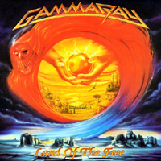
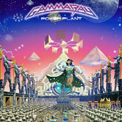
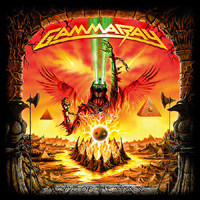

1 GammaRay

Gamma Ray es una banda de Power Metal, del norte de Alemania, fundada y liderada por Kai Hansen después de su salida de Helloween. Hansen es el vocalista, guitarrista compositor principal de la banda. Esta es conocida como una de las bandas más prominentes de la escena Heavy Metal alemán. A pesar de haber muchos cambios en la alineación en el principio de su carrera, la alineación de la banda se ha mantenido estable desde 1997. El último cambio ha sido de batería en el 2012.
Integrantes Actuales: Kai Hansen, Henjo Richter, Dirk Schlächter, Michael Ehré, Frank Beck.
Top Albums

Land of the free

Power Plant

Lan of the free II